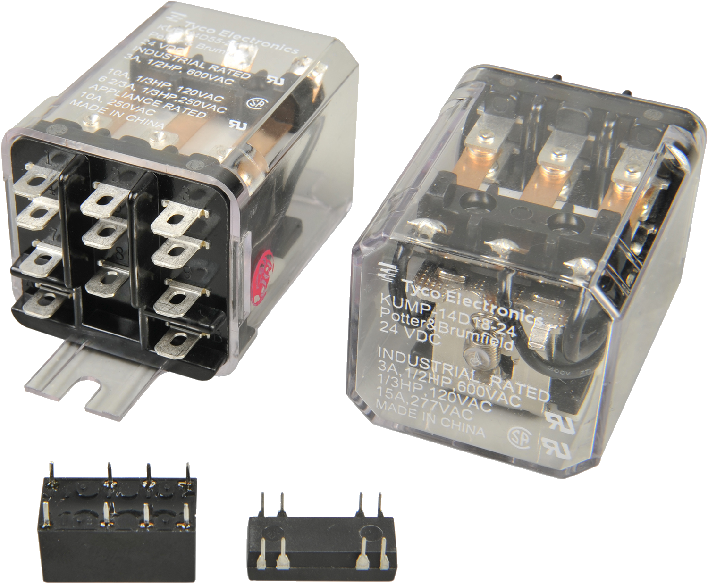
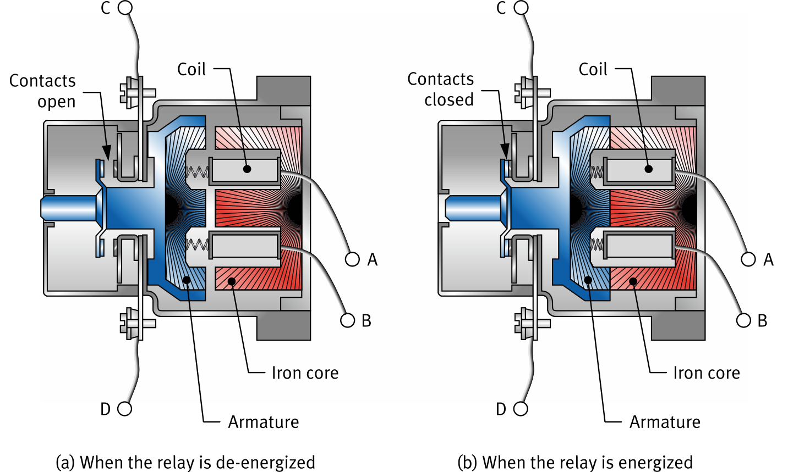
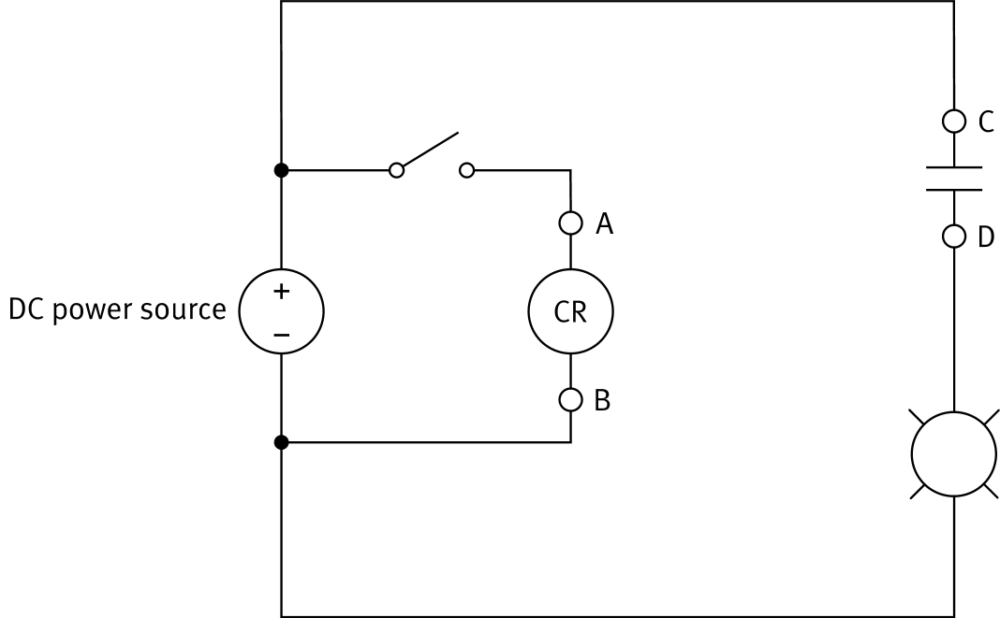

// Electromagnets · Contacts · NO & NC · Applications
A relay is an electrically actuated switch — using electromagnetism to open or close a circuit.

No current flows in the coil → no magnetic field → armature released → contacts open
The relay acts like a toggle switch in its open state. Any circuit connected to terminals C and D is open.
Current flows through terminals A and B → magnetic field → armature attracted → contacts close
The relay acts like a toggle switch in its closed state. Any circuit connected to terminals C and D is closed.

There are two basic types of contacts found in relays. The type indicates the contact's state when the coil is de-energized — this is its normal state.
In circuit diagrams, the coil and contacts of a relay are drawn as separate symbols — they are part of the same component but belong to independent circuits.
| Component | Symbol |
|---|---|
| Relay — Coil | |
| Relay — NO contact | |
| Relay — NC contact |
The coil and contacts form independent circuits — this is the key advantage of a relay.

Relays are electrically actuated switches — used wherever a control signal must operate a load circuit at a safe distance or power level.
The training system DC relay has a coil and two independent sets of contacts — each with both an NO and NC terminal.